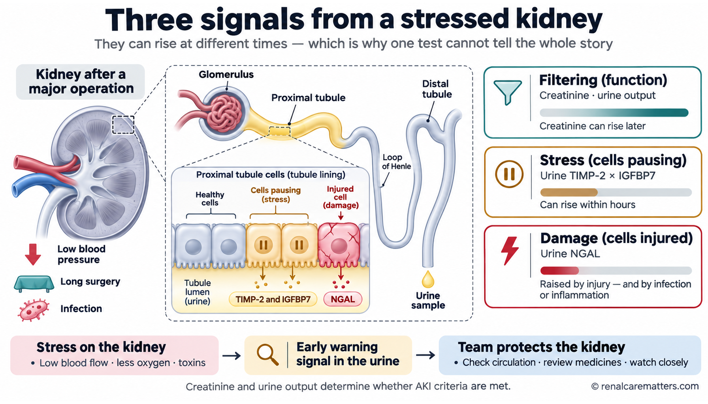
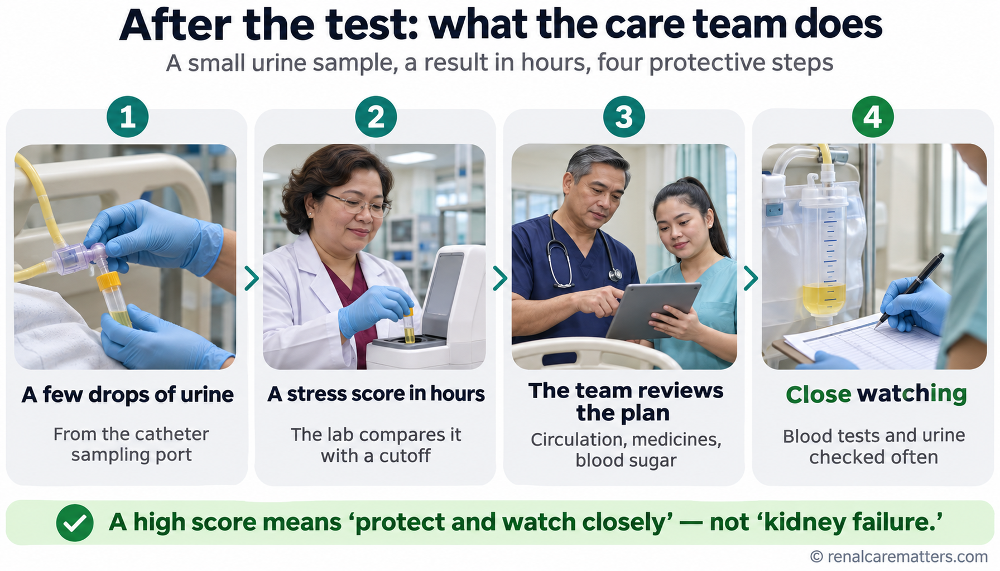
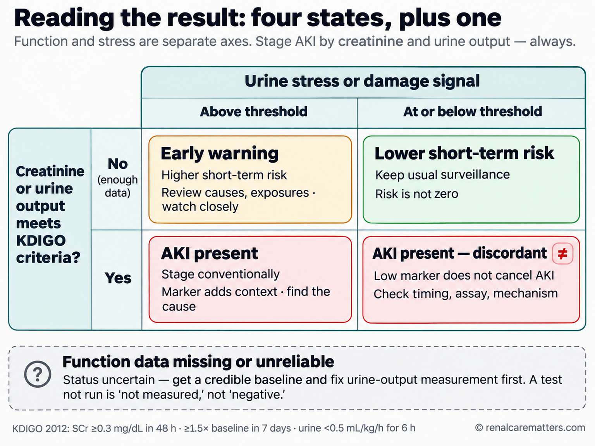
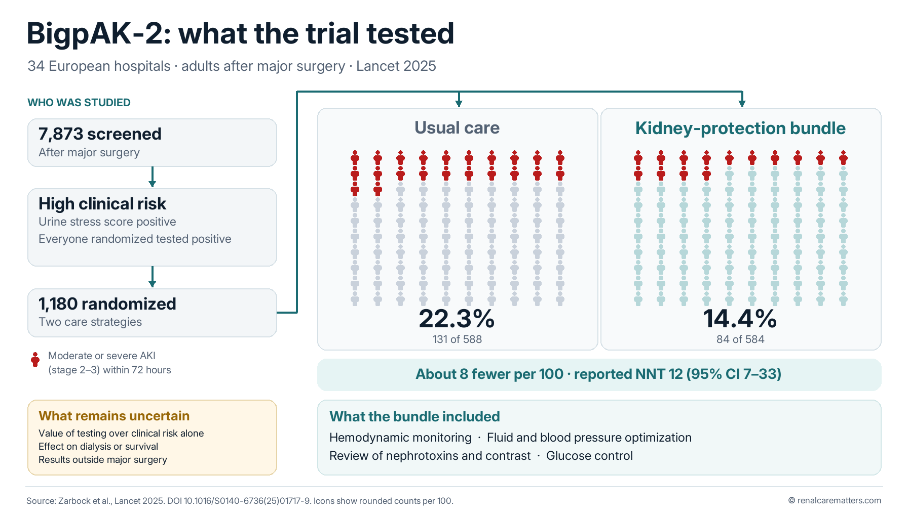
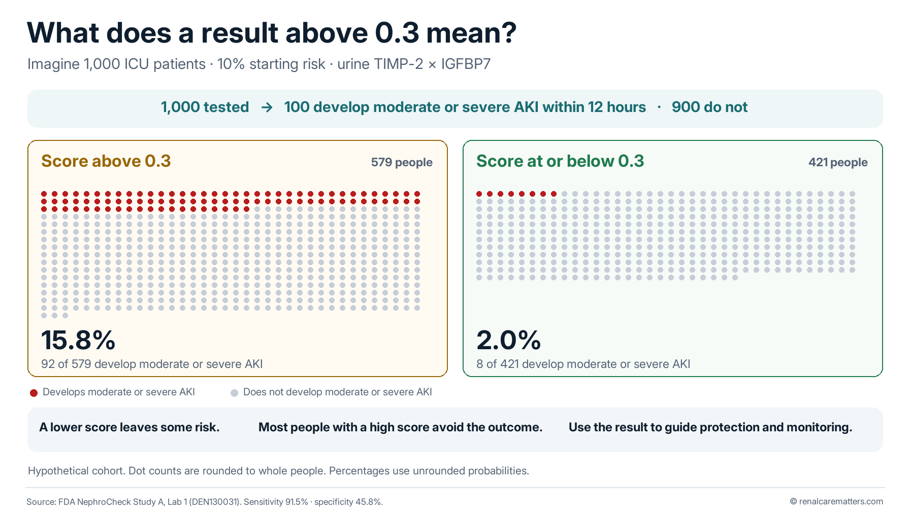
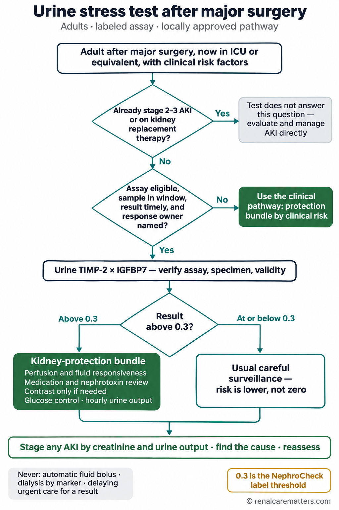

Tell the nurse or doctor right away if you notice any of theseSabihin agad sa nurse o doktor kung mapansin mo ang alinman ditoSultihi dayon ang nurse o doktor kung imong mamatikdan ang bisan usa niiniSabian me agad ing nurse o doktor nung mapansinan me ing nanu man kareni
Very little or no urine in the bag or toilet for several hours, new confusion or unusual sleepiness, worsening breathlessness or swelling, or a painful, swollen lower belly with no urine coming out. These are signs to check now — whether or not a kidney biomarker test was done, and whatever its result.Napakakaunti o walang ihi sa bag o sa inidoro sa loob ng ilang oras, bagong pagkalito o hindi pangkaraniwang antok, lumalalang hirap sa paghinga o pamamaga, o masakit at namamagang puson na walang lumalabas na ihi. Kailangang suriin agad ang mga ito — may biomarker test man o wala, at anuman ang resulta nito.Gamay kaayo o walay ihi sa bag o kasilyas sulod sa pipila ka oras, bag-ong kalibog o dili kasagarang katulogon, nagkagrabeng kalisod sa pagginhawa o paghubag, o sakit ug hubag nga puson nga walay ihi nga mogawas. Kini mga timailhan nga susihon dayon — naa man o wala'y biomarker test, ug bisan unsa ang resulta niini.Alatuang o alang mie king bag o kubeta king pilang oras, bayung pamagkalitu (pagkalito) o e karaniwang tudtud (antok), lalalang kesakitan king pamanyawa o pamamaga, o masakit at mamagang puson nung alang mie a lalual. Kailangan dang suryan agad deti — atin man o ala yang biomarker test, at nanu man ing resulta na.
A smoke alarm for the kidney — not a fire reportIsang smoke alarm para sa bato — hindi ulat ng sunogUsa ka smoke alarm alang sa kidney — dili report sa sunogMetung a smoke alarm para king batu — e report ning sunog
The usual kidney blood test, creatinine, works like the scorch marks a fire leaves behind: it rises only after the kidney's filtering has already dropped, often a day or two late. A kidney stress biomarker is more like a smoke alarm. It picks up a distress signal from stressed kidney cells early, sometimes before the damage shows in the blood. But a smoke alarm can go off from burnt toast, and it can stay quiet during a small fire. That is why the test warns — it does not diagnose.Ang karaniwang blood test para sa bato, ang creatinine, ay parang mga bakas ng sunog: tumataas lang ito kapag bumaba na ang pagsala ng bato, kadalasan ay huli nang isa o dalawang araw. Ang kidney stress biomarker naman ay parang smoke alarm. Maagang nasasagap nito ang senyales ng hirap mula sa mga selula ng bato, minsan bago pa makita ang pinsala sa dugo. Pero ang smoke alarm ay maaaring tumunog dahil sa sunog na tinapay, at maaaring tahimik sa maliit na sunog. Kaya ang test ay nagbababala — hindi ito nagdi-diagnose.Ang kasagarang blood test alang sa kidney, ang creatinine, sama sa mga marka nga gibilin sa sunog: mosaka lang kini human mikunhod na ang pagsala sa kidney, kasagaran ulahi og usa o duha ka adlaw. Ang kidney stress biomarker mas sama sa smoke alarm. Sayo niining makuha ang timailhan sa kalisod gikan sa mga selula sa kidney, usahay sa dili pa makita ang kadaot sa dugo. Apan ang smoke alarm mahimong motingog tungod sa nasunog nga pan, ug mahimong hilom sa gamay nga sunog. Mao nga ang test nagpasidaan — dili kini nag-diagnose.Ing karaniwang blood test para king batu, ing creatinine, kalupa ya ning bakas a iwan ning sunog: mitas ya mu kaibat a mibaba na ing pamagsala ning batu, kalalabanan tauli ng metung o adwang aldo. Ing kidney stress biomarker kalupa ya ning smoke alarm. Agad nang ikua ing senyales ning kesakitan (hirap) manibat kareng selula ning batu, minsan bayu ya pa makit ing pinsala king daya. Oneng ing smoke alarm malyari yang tumunug uli ning tinapay a misunug, at malyari yang tahimik king malating sunog. Kaya ing test mamabala — e ya mag-diagnose.
Here is what is happening inside. The kidney's tiny tubes (tubules) do most of its hard work, reabsorbing salt and water all day. When they run short of blood flow or oxygen — during a long operation, low blood pressure, or a severe infection — the tubule cells protect themselves by pressing "pause" on cell division. As they pause, they release two proteins into the urine: TIMP-2 and IGFBP7. A laboratory machine multiplies the two levels into one number, the stress score. Another protein, NGAL (neutrophil gelatinase-associated lipocalin), comes from tubule cells that are already injured. These are what doctors call biomarkers — measurable signals of what the cells are going through.Ganito ang nangyayari sa loob. Ang maliliit na tubo ng bato (tubules) ang gumagawa ng karamihan sa mabigat na trabaho nito, binabawi ang asin at tubig buong araw. Kapag kinulang sila sa daloy ng dugo o oxygen — sa mahabang operasyon, mababang presyon ng dugo, o malubhang impeksyon — pinoprotektahan ng mga tubule cell ang sarili sa pamamagitan ng pag-"pause" sa paghahati ng selula. Habang naka-pause, naglalabas sila ng dalawang protina sa ihi: TIMP-2 at IGFBP7. Pinag-uugnay ng makina sa laboratoryo ang dalawang antas para maging isang numero, ang stress score. Ang isa pang protina, ang NGAL, ay galing sa mga tubule cell na nasira na. Ito ang tinatawag ng mga doktor na biomarker — masusukat na senyales ng pinagdadaanan ng mga selula.Mao kini ang nahitabo sa sulod. Ang gagmayng tubo sa kidney (tubules) ang nagbuhat sa kadaghanan sa bug-at nga trabaho niini, nagbawi sa asin ug tubig tibuok adlaw. Kung makulangan sila sa dagan sa dugo o oxygen — sa taas nga operasyon, ubos nga presyon sa dugo, o grabeng impeksyon — ang mga tubule cell nanalipod sa ilang kaugalingon pinaagi sa pag-"pause" sa pagbahin sa selula. Samtang naka-pause, nagpagawas sila og duha ka protina sa ihi: TIMP-2 ug IGFBP7. Ang makina sa laboratoryo naghiusa sa duha ka lebel aron mahimong usa ka numero, ang stress score. Ang laing protina, ang NGAL, gikan sa mga tubule cell nga nadaot na. Kini ang gitawag sa mga doktor nga biomarker — masukod nga timailhan sa giagian sa mga selula.Iti ing malilyari king lub. Reng malalating tubu ning batu (tubules) ing gagawa king kalalabanan a mabayat a obra na, babawian de ing asin at danum king kabilang aldo. Nung kulangan la king dalan ning daya o oxygen — king mabayung operasyon, mababang presyon ning daya, o malalang impeksyon — pamrotektaran da ring sarili da reng tubule cell kapamilatan ning pamag-"pause" king pamamaglaku ning selula. Kabang naka-pause, magpalual lang adwang protina king mie: TIMP-2 at IGFBP7. Ing makina king laboratoryu pisasamban na ing adwang antas ban maging metung a numeru, ing stress score. Ing aliwang protina, ing NGAL, manibat ya kareng tubule cell a mesira na. Iti ing awagan da reng doktor a biomarker — senyales a malyaring sukatan king pigdaanan da reng selula.

Function, stress and damage are three different signals. Creatinine and urine output show how well the kidney is filtering; TIMP-2 and IGFBP7 show tubule cells under stress; NGAL shows cells that are already injured. They can rise at different times. © renalcarematters.com
- TIMP-2
- Tissue inhibitor of metalloproteinases-2
- IGFBP7
- Insulin-like growth factor-binding protein 7
- NGAL
- Neutrophil gelatinase-associated lipocalin
- GFR
- Glomerular filtration rate
Where the smoke-alarm comparison stops workingKung saan hindi na tugma ang paghahambing sa smoke alarmAsa na dili mohaom ang pagtandi sa smoke alarmNung nu e na tugma ing pamanyambing king smoke alarm
A real alarm only says "smoke." The stress score is a risk number: a higher score means a higher chance of moderate or severe acute kidney injury (AKI) in the next 12 hours for certain hospital patients, not a certainty. Many people with a high score never develop serious kidney injury, and some with a low score still do. The result always has to be read together with creatinine, urine output, and the person's whole condition.Ang tunay na alarm ay nagsasabi lang ng "usok." Ang stress score ay numero ng panganib: mas mataas na score, mas malaking tsansa ng katamtaman o malubhang acute kidney injury (AKI) sa susunod na 12 oras para sa ilang pasyente sa ospital — hindi ito katiyakan. Maraming may mataas na score ang hindi nagkakaroon ng malubhang pinsala sa bato, at may ilang may mababang score na nagkakaroon pa rin. Laging binabasa ang resulta kasama ng creatinine, dami ng ihi, at buong kalagayan ng tao.Ang tinuod nga alarm moingon lang og "aso." Ang stress score usa ka numero sa peligro: mas taas nga score, mas dako nga kahigayonan sa kasarangan o grabeng acute kidney injury (AKI) sulod sa sunod nga 12 ka oras alang sa pipila ka pasyente sa ospital — dili kini kasiguroan. Daghan nga taas og score ang wala magkaroon og grabeng kadaot sa kidney, ug adunay pipila nga ubos og score nga naa gihapon. Kanunay basahon ang resulta kauban sa creatinine, kadaghanon sa ihi, ug tibuok kahimtang sa tawo.Ing tutung alarm sasabyan na mu ing "asuk." Ing stress score numeru ya ning panganib: mas matas a score, mas maragul a tsansa ning katamtaman o malalang acute kidney injury (AKI) king susunud a 12 oras para kareng ilang pasyente king ospital — e ya katiyakan. Dakal a atin matas a score ing e mangabiran malalang pinsala king batu, at atin ilan a atin mababang score a mangabiran ya pa murin. Basan ya pane ing resulta kayabe ning creatinine, dakal ning mie, at kabilang kalagayan ning tau.
This test is for a few hospital patients, not everyonePara sa iilang pasyente sa ospital ang test na ito, hindi para sa lahatKini nga test alang sa pipila ka pasyente sa ospital, dili alang sa tananPara kareng ilang pasyente king ospital ing test a iti, e para king eganagana
Kidney stress tests were studied, and approved in the United States, for very specific situations. The best evidence is for adults who have just had a major operation (heart, abdominal, or other large surgery), who are being watched in an intensive care unit (ICU) or a high-dependency area, and whose doctors already think their kidneys are at risk. A related test (urine NGAL) is approved for critically ill children and young people in a pediatric ICU. The tests have not been shown to help when used for everyone in the emergency room, on a regular ward, or at a clinic check-up.Ang mga kidney stress test ay pinag-aralan, at inaprubahan sa Estados Unidos, para sa mga partikular na sitwasyon. Ang pinakamalakas na ebidensya ay para sa mga adult na kakatapos lang ng malaking operasyon (sa puso, tiyan, o iba pang malaking operasyon), na binabantayan sa intensive care unit (ICU) o high-dependency area, at itinuturing na ng kanilang doktor na nasa panganib ang kanilang bato. Ang kaugnay na test (urine NGAL) ay aprubado para sa mga batang malubha ang sakit sa pediatric ICU. Hindi pa napatunayang nakakatulong ang mga test kapag ginamit sa lahat sa emergency room, sa karaniwang ward, o sa check-up sa klinika.Ang mga kidney stress test gitun-an, ug gi-aprobahan sa Estados Unidos, alang sa espesipikong mga sitwasyon. Ang labing lig-on nga ebidensya alang sa mga hamtong nga bag-o lang naoperahan og dakong operasyon (sa kasingkasing, tiyan, o uban pang dakong operasyon), nga gibantayan sa intensive care unit (ICU) o high-dependency area, ug giisip na sa ilang doktor nga naa sa peligro ang ilang kidney. Ang may kalabotan nga test (urine NGAL) gi-aprobahan alang sa mga bata nga grabe ang sakit sa pediatric ICU. Wala pa mapamatud-i nga makatabang ang mga test kung gamiton sa tanan sa emergency room, sa kasagarang ward, o sa check-up sa klinika.Reng kidney stress test pag-aralan dela, at in-aprubaran king Estados Unidos, para kareng partikular a sitwasyon. Ing pekamakasing ebidensya para kareng matwa a kayari pamu maragul a operasyon (king pusu, tian, o aliwang maragul a operasyon), a babantayan king intensive care unit (ICU) o high-dependency area, at isipan na ning doktor da a atyu king panganib ing batu ra. Ing kaugnay a test (urine NGAL) aprubado ya para kareng anak a malala ing sakit king pediatric ICU. E pa apatunayan a makatulung la reng test nung gamitan para king eganagana king emergency room, king karaniwang ward, o king check-up king klinika.
Most likely to helpPinakamalamang na makatulongLabing lagmit nga makatabangPekamalamang a makatulung
An adult after major surgery, in intensive care, at high kidney risk, in a hospital that can act on the result within hours.Adult pagkatapos ng malaking operasyon, nasa intensive care, mataas ang panganib sa bato, sa ospital na kayang kumilos sa resulta sa loob ng ilang oras.Hamtong human sa dakong operasyon, naa sa intensive care, taas ang peligro sa kidney, sa ospital nga makalihok sa resulta sulod sa pipila ka oras.Matwa kaibat ning maragul a operasyon, atyu king intensive care, matas ing panganib king batu, king ospital a makakilus king resulta king kilub ning pilang oras.
Children's ICUICU ng mga bataICU sa mga bataICU da reng anak
A different test (urine NGAL) with its own rules, used by pediatric specialists — adult numbers never apply to children.Ibang test (urine NGAL) na may sariling patakaran, ginagamit ng mga pediatric specialist — hindi kailanman ginagamit ang numero ng adult sa bata.Laing test (urine NGAL) nga may kaugalingong lagda, gigamit sa mga pediatric specialist — dili gyud gamiton ang numero sa hamtong sa bata.Aliwang test (urine NGAL) a atin sariling patakaran, gamitan da reng pediatric specialist — e la gamitan king anak ing numeru da reng matwa.
Not useful as a routine checkHindi kapaki-pakinabang bilang karaniwang checkDili mapuslanon isip kasagarang checkE makapakinabang bilang karaniwang check
Clinic visits, annual check-ups, screening everyone in the emergency room, or deciding when to start dialysis.Pagbisita sa klinika, taunang check-up, pagsusuri sa lahat sa emergency room, o pagpapasya kung kailan sisimulan ang dialysis.Pagbisita sa klinika, tinuig nga check-up, pagsusi sa tanan sa emergency room, o pagdesisyon kung kanus-a sugdan ang dialysis.Pamamisita king klinika, taunang check-up, pamanyuri king eganagana king emergency room, o pamagpasya nung kapilan ya umpisan ing dialysis.
If your hospital does not offer the testKung walang ganitong test ang inyong ospitalKung walay ingon niini nga test ang inyong ospitalNung alang makanyang test ing ospital yu
Many hospitals in the Philippines do not yet run these tests, and that is okay. The protective steps that made the difference in the studies — careful blood pressure and fluid care, a medicine review, blood sugar control, and close watching of creatinine and urine — can be given without the test to anyone the team judges to be at high risk. A missing test should never delay good kidney care.Maraming ospital sa Pilipinas ang wala pang ganitong test, at ayos lang iyon. Ang mga hakbang na nagpabago sa resulta sa mga pag-aaral — maingat na pangangalaga sa presyon ng dugo at likido, pagsusuri ng gamot, kontrol sa asukal sa dugo, at malapit na pagbabantay sa creatinine at ihi — ay maaaring ibigay kahit walang test sa sinumang itinuturing ng team na mataas ang panganib. Hindi dapat maantala ang mabuting pangangalaga sa bato dahil lang walang test.Daghang ospital sa Pilipinas ang wala pa'y ingon niini nga test, ug okay ra kana. Ang mga lakang nga naghatag og kalainan sa mga pagtuon — mabinantayon nga pag-atiman sa presyon sa dugo ug likido, pagsusi sa tambal, kontrol sa asukar sa dugo, ug suod nga pagbantay sa creatinine ug ihi — mahimong ihatag bisan walay test sa bisan kinsa nga giisip sa team nga taas ang peligro. Dili angay malangan ang maayong pag-atiman sa kidney tungod lang kay walay test.Dakal a ospital king Pilipinas ing ala pang makanyang test, at mayap ya mu iyan. Reng pamikatang (hakbang) a mamaliari king resulta kareng pag-aral — maingat a pamag-alaga king presyon ning daya at likidu, pamanyuri king gamut, kontrol king asukal king daya, at malapit a pamamantay king creatinine at mie — malyari dang ibie uli man ala yang test king ninu man a isipan ning team a matas ing panganib. E dapat malate ing mayap a pamag-alaga king batu uli mu ning alang test.
What a high or a low result really meansAno talaga ang ibig sabihin ng mataas o mababang resultaUnsa gyud ang buot ipasabot sa taas o ubos nga resultaNanu talaga ing kayulugan ning matas o mababang resulta
The laboratory compares the stress score with a cut-off of 0.3. Think of it as sorting people into "watch closely" and "keep watching as usual." In the large hospital studies, about 9 in 10 people who went on to develop moderate or severe kidney injury had a score above 0.3 — so a low score is reassuring. But roughly half of the people who stayed well also scored above 0.3 — so a high score is a reason to protect the kidney, not proof that it is failing.Ikinukumpara ng laboratoryo ang stress score sa cut-off na 0.3. Isipin ito na paghahati ng mga tao sa "bantayan nang mabuti" at "patuloy na bantayan gaya ng dati." Sa malalaking pag-aaral sa ospital, mga 9 sa 10 taong nagkaroon ng katamtaman o malubhang pinsala sa bato ay may score na higit sa 0.3 — kaya nakakapanatag ang mababang score. Pero mga kalahati ng mga taong nanatiling maayos ay may score din na higit sa 0.3 — kaya ang mataas na score ay dahilan para protektahan ang bato, hindi patunay na pumapalya na ito.Ang laboratoryo nagtandi sa stress score sa cut-off nga 0.3. Hunahunaa kini nga pagbahin sa mga tawo ngadto sa "bantayan pag-ayo" ug "padayon nga bantayan sama sa naandan." Sa dagkong mga pagtuon sa ospital, mga 9 sa 10 ka tawo nga nakabaton og kasarangan o grabeng kadaot sa kidney adunay score nga labaw sa 0.3 — mao nga makapahupay ang ubos nga score. Apan mga katunga sa mga tawo nga nagpabiling maayo adunay score usab nga labaw sa 0.3 — mao nga ang taas nga score rason aron panalipdan ang kidney, dili pamatuod nga napakyas na kini.Ikumpara na ning laboratoryu ing stress score king cut-off a 0.3. Isipan me iti a pamamaglaku kareng tau king "bantayan ng mayap" at "patuloy dang bantayan anti ing dati." Kareng maragul a pag-aral king ospital, intang 9 king 10 a tau a mangabiran katamtaman o malalang pinsala king batu ing atin score a mas matas king 0.3 — kaya makapanatag ing mababang score. Oneng intang kalawa kareng tau a menatili mayap murin ing atin score a mas matas king 0.3 — kaya ing matas a score sangkan ban protektaran ing batu, e patunay a papalya ne.
| ResultResultaResultaResulta | What it meansIbig sabihinBuot ipasabotKayulugan | What usually happens nextKaraniwang susunod na gagawinKasagarang sunod nga buhatonKaraniwang susunud a daptan |
|---|---|---|
| Above 0.3Higit sa 0.3Labaw sa 0.3Mas matas king 0.3 | Higher chance of moderate or severe kidney injury in the next 12 hours. Not a diagnosis.Mas mataas na tsansa ng katamtaman o malubhang pinsala sa bato sa susunod na 12 oras. Hindi ito diagnosis.Mas taas nga kahigayonan sa kasarangan o grabeng kadaot sa kidney sulod sa sunod nga 12 ka oras. Dili kini diagnosis.Mas matas a tsansa ning katamtaman o malalang pinsala king batu king susunud a 12 oras. E ya diagnosis. | A kidney-protection plan, more frequent blood tests and urine measurements, and a medicine review.Plano para protektahan ang bato, mas madalas na blood test at pagsukat ng ihi, at pagsusuri ng gamot.Plano aron panalipdan ang kidney, mas kanunay nga blood test ug pagsukod sa ihi, ug pagsusi sa tambal.Planu ban protektaran ing batu, mas malimit a blood test at pamanukat king mie, at pamanyuri king gamut. |
| 0.3 or lower0.3 o mas mababa0.3 o mas ubos0.3 o mas mababa | Lower short-term chance — but kidney injury is still possible, especially if the illness changes.Mas mababang tsansa sa maikling panahon — pero posible pa rin ang pinsala sa bato, lalo na kung magbago ang sakit.Mas ubos nga kahigayonan sa mubong panahon — apan posible gihapon ang kadaot sa kidney, labi na kung mausab ang sakit.Mas mababang tsansa king malating panaun — oneng posible ya pa murin ing pinsala king batu, lalu na nung mibayu ing sakit. | Usual careful monitoring continues. A normal result does not cancel other warning signs.Patuloy ang karaniwang maingat na pagbabantay. Hindi binubura ng normal na resulta ang ibang babala.Padayon ang kasagarang mabinantayon nga pagbantay. Ang normal nga resulta dili mopapas sa ubang pasidaan.Patuloy ing karaniwang maingat a pamamantay. Ing normal a resulta e na bubura ing aliwang babala. |
| Creatinine or urine already abnormalAbnormal na ang creatinine o ihiAbnormal na ang creatinine o ihiAbnormal ne ing creatinine o mie | Kidney injury is already present by the standard rules, whatever the stress score shows.May pinsala na sa bato ayon sa karaniwang patakaran, anuman ang ipakita ng stress score.Naa nay kadaot sa kidney sumala sa kasagarang lagda, bisan unsa ang ipakita sa stress score.Atin neng pinsala ing batu agpang king karaniwang patakaran, nanu man ing ipakit ning stress score. | The team stages the injury, looks for its cause, and treats it directly.Tinutukoy ng team ang antas ng pinsala, hinahanap ang sanhi, at direktang ginagamot ito.Gitino sa team ang ang-ang sa kadaot, gipangita ang hinungdan, ug direktang gitambalan kini.Tutukuyan na ning team ing antas ning pinsala, panintunan ing sanhi, at diretsu yang panulunan. |
What the care team does with a high resultAno ang ginagawa ng care team sa mataas na resultaUnsa ang gibuhat sa care team sa taas nga resultaNanu ing daptan ning care team king matas a resulta
The test is only as useful as the action that follows it. In the trials that helped patients, a high score triggered a kidney-protection plan that doctors call a "bundle." Each part makes sense from how the kidney works: the tubules need steady blood flow and oxygen, so blood pressure and circulation are optimized; some medicines reduce blood flow inside the kidney or are toxic to tubules, so they are reviewed; very high blood sugar adds stress to tubule cells, so it is controlled.Kasing-halaga lang ng test ang aksyong kasunod nito. Sa mga pag-aaral na nakatulong sa pasyente, ang mataas na score ay nagsimula ng plano para protektahan ang bato na tinatawag ng mga doktor na "bundle." Bawat bahagi ay may katuturan batay sa kung paano gumagana ang bato: kailangan ng tubules ang tuloy-tuloy na daloy ng dugo at oxygen, kaya inaayos ang presyon at sirkulasyon; may mga gamot na nagpapabawas ng daloy ng dugo sa loob ng bato o nakakalason sa tubules, kaya sinusuri ang mga ito; ang napakataas na asukal sa dugo ay nagdadagdag ng hirap sa mga tubule cell, kaya kinokontrol ito.Ang test mapuslanon lang sumala sa aksyon nga mosunod niini. Sa mga pagtuon nga nakatabang sa pasyente, ang taas nga score nagsugod og plano aron panalipdan ang kidney nga gitawag sa mga doktor og "bundle." Ang matag bahin adunay kahulogan base sa kung giunsa paglihok sa kidney: kinahanglan sa tubules ang padayon nga dagan sa dugo ug oxygen, mao nga gi-ayo ang presyon ug sirkulasyon; adunay mga tambal nga mopakunhod sa dagan sa dugo sulod sa kidney o makahilo sa tubules, mao nga gisusi kini; ang taas kaayo nga asukar sa dugo nagdugang og kalisod sa mga tubule cell, mao nga gikontrol kini.Ing test makapakinabang ya mu agpang king aksyon a sunud kaya. Kareng pag-aral a tinulung kareng pasyente, ing matas a score minumpisa yang planu ban protektaran ing batu a awagan da reng doktor a "bundle." Balang bage atin yang katuturan agpang king paraan a pamag-obra ning batu: kailangan da reng tubules ing tuloy-tuloy a dalan ning daya at oxygen, kaya ayusan de ing presyon at sirkulasyon; atin gamut a pamababa king dalan ning daya king lub ning batu o makalasun kareng tubules, kaya suryan de; ing masyadung matas a asukal king daya mamadagdag kesakitan kareng tubule cell, kaya kontrolan de.
- Circulation checked carefully.Maingat na sinusuri ang sirkulasyon.Mabinantayon nga gisusi ang sirkulasyon.Maingat a suryan ing sirkulasyon. Blood pressure, heart output and fluid status are assessed, often with special monitors. Fluids are given only if the body will actually use them — too much fluid can also harm the kidney.Sinusuri ang presyon ng dugo, lakas ng puso at kalagayan ng likido, madalas gamit ang espesyal na monitor. Binibigyan lang ng likido kung talagang magagamit ito ng katawan — ang sobrang likido ay maaari ring makasama sa bato.Gisusi ang presyon sa dugo, kusog sa kasingkasing ug kahimtang sa likido, kasagaran gamit ang espesyal nga monitor. Hatagan lang og likido kung tinuod nga magamit kini sa lawas — ang sobra nga likido mahimo usab makadaot sa kidney.Suryan de ing presyon ning daya, kasikanan ning pusu at kalagayan ning likidu, malimit gamit ing espesyal a monitor. Bibie lang likidu nung talagang agamit na ning katawan — ing sobrang likidu malyari ya murin makasakit king batu.
- Medicines reviewed.Sinusuri ang mga gamot.Gisusi ang mga tambal.Suryan de reng gamut. Pain relievers like ibuprofen or mefenamic acid, some antibiotics, and certain blood-pressure medicines may be paused or adjusted. X-ray dye (contrast) is used only when the scan is truly needed.Ang mga pain reliever tulad ng ibuprofen o mefenamic acid, ilang antibiotic, at ilang gamot sa presyon ay maaaring ihinto muna o ayusin ang dosis. Ang dye sa X-ray (contrast) ay ginagamit lang kung talagang kailangan ang scan.Ang mga pain reliever sama sa ibuprofen o mefenamic acid, pipila ka antibiotic, ug pipila ka tambal sa presyon mahimong ihunong una o usbon ang dosis. Ang dye sa X-ray (contrast) gamiton lang kung tinuod nga kinahanglan ang scan.Reng pain reliever anti ing ibuprofen o mefenamic acid, ilang antibiotic, at ilang gamut king presyon malyari dang itigil pa o ayusan ing dosis. Ing dye king X-ray (contrast) gamitan de mu nung talagang kailangan ing scan.
- Blood sugar kept in a safe range.Pinapanatili ang asukal sa dugo sa ligtas na antas.Gipabilin ang asukar sa dugo sa luwas nga lebel.Pamanatilian ing asukal king daya king ligtas a antas. Even in people without diabetes, stress after surgery can push sugar up.Kahit sa walang diabetes, ang stress pagkatapos ng operasyon ay maaaring magpataas ng asukal.Bisan sa mga walay diabetes, ang stress human sa operasyon mahimong mopataas sa asukar.Uli man kareng alang diabetes, ing stress kaibat ning operasyon malyari yang pamatas king asukal.
- Kidneys watched closely.Malapit na binabantayan ang bato.Suod nga gibantayan ang kidney.Malapit a babantayan ing batu. More frequent creatinine tests and hourly urine measurements, so any change is caught early.Mas madalas na creatinine test at oras-oras na pagsukat ng ihi, para maagang mahuli ang anumang pagbabago.Mas kanunay nga creatinine test ug matag oras nga pagsukod sa ihi, aron sayo nga makit-an ang bisan unsang kausaban.Mas malimit a creatinine test at oras-oras a pamanukat king mie, ban agad dang akit ing nanu mang pamagbayu.

From urine sample to protection plan: a few milliliters of urine, a laboratory score within hours, then four protective steps — circulation, medicines, blood sugar, and close kidney monitoring. © renalcarematters.com
- ICU
- Intensive care unit
How much does it help?Gaano ito nakakatulong?Unsa kadako ang tabang niini?Makanu kalaki ing tulung na?
In the largest trial (BigpAK-2, 34 European hospitals, 2025), among high-risk adults after major surgery who all had a high stress score, about 22 in 100 developed moderate or severe kidney injury with usual care, compared with about 14 in 100 with the protection plan — roughly 8 fewer people in every 100. Combining all four similar trials gave the same picture. The trials did not show fewer deaths or less need for dialysis, and they did not test whether the plan would work just as well if doctors chose patients without the test.Sa pinakamalaking pag-aaral (BigpAK-2, 34 na ospital sa Europa, 2025), sa mga high-risk na adult pagkatapos ng malaking operasyon na lahat ay may mataas na stress score, mga 22 sa 100 ang nagkaroon ng katamtaman o malubhang pinsala sa bato sa karaniwang pangangalaga, kumpara sa mga 14 sa 100 sa plano ng proteksyon — mga 8 na mas kaunti sa bawat 100. Ganoon din ang lumabas nang pagsamahin ang apat na katulad na pag-aaral. Hindi ipinakita ng mga pag-aaral na mas kaunti ang namatay o nangailangan ng dialysis, at hindi nila sinubok kung pareho rin ang bisa kung pipiliin ng doktor ang pasyente nang walang test.Sa labing dakong pagtuon (BigpAK-2, 34 ka ospital sa Europe, 2025), sa mga high-risk nga hamtong human sa dakong operasyon nga tanan adunay taas nga stress score, mga 22 sa 100 ang nakabaton og kasarangan o grabeng kadaot sa kidney sa kasagarang pag-atiman, itandi sa mga 14 sa 100 sa plano sa panalipod — mga 8 ka tawo nga mas gamay sa matag 100. Mao usab ang resulta sa paghiusa sa upat ka susamang pagtuon. Wala ipakita sa mga pagtuon nga mas gamay ang namatay o nanginahanglan og dialysis, ug wala nila sulayi kung parehas ra ang epekto kung pilion sa doktor ang pasyente nga walay test.King pekamaragul a pag-aral (BigpAK-2, 34 a ospital king Europa, 2025), kareng high-risk a matwa kaibat ning maragul a operasyon a eganagana atin matas a stress score, intang 22 king 100 ing mangabiran katamtaman o malalang pinsala king batu king karaniwang pamag-alaga, kumpara king intang 14 king 100 king planu ning proteksyon — intang 8 a mas kakaunti king balang 100. Pareu murin ing lumual kanita pisamban de ing apat a kapareung pag-aral. E ra ipakit reng pag-aral a mas kakaunti ing mete o mikailangan dialysis, at e ra subukan nung pareu ya ing bisa nung pilian da ning doktor ing pasyente nung alang test.
Good questions to ask, and what not to doMabubuting tanong na itanong, at ang hindi dapat gawinMaayong mga pangutana, ug ang dili angay buhatonMayap a kutang a ikutang, at ing e dapat daptan
Ask the teamItanong sa teamPangutan-a ang teamIkutang king team
- "Is my relative at high risk for kidney injury after this operation?""Mataas ba ang panganib ng aking kamag-anak sa pinsala sa bato pagkatapos ng operasyong ito?""Taas ba ang peligro sa akong paryente sa kadaot sa kidney human niini nga operasyon?""Matas ya ba ing panganib ning kamag-anak ku king pinsala king batu kaibat ning operasyon a iti?"
- "Would a kidney stress test change what you do? If it is not available, are the protective steps being given anyway?""Babaguhin ba ng kidney stress test ang gagawin ninyo? Kung wala ito, ibinibigay pa rin ba ang mga hakbang ng proteksyon?""Mausab ba sa kidney stress test ang inyong buhaton? Kung wala kini, gihatag gihapon ba ang mga lakang sa panalipod?""Bayuan na ba ning kidney stress test ing daptan yu? Nung ala ya, ibibie yu pa murin ba reng pamikatang ning proteksyon?"
- "Which of the home medicines should be paused, and who will tell us when to restart them?""Alin sa mga gamot sa bahay ang dapat ihinto muna, at sino ang magsasabi kung kailan ito ibabalik?""Hain sa mga tambal sa balay ang angay ihunong una, ug kinsa ang mosulti kung kanus-a kini ibalik?""Nanu kareng gamut king bale ing dapat itigil pa, at ninu ing mamyabi nung kapilan de ibalik?"
Tell the teamSabihin sa teamSultihi ang teamSabian ing team
- Every medicine, herbal product, and supplement taken at home, including over-the-counter pain relievers.Bawat gamot, herbal, at supplement na iniinom sa bahay, kasama ang mga pain reliever na nabibili nang walang reseta.Matag tambal, herbal, ug supplement nga giinom sa balay, lakip ang mga pain reliever nga mapalit bisan walay reseta.Balang gamut, herbal, at supplement a inuman king bale, kayabe reng pain reliever a asaliw nung alang reseta.
- A past kidney problem, a recent creatinine result, or a history of kidney injury after an earlier illness.Dating problema sa bato, kamakailang resulta ng creatinine, o dating pinsala sa bato pagkatapos ng naunang sakit.Kaniadto nga problema sa kidney, bag-o nga resulta sa creatinine, o kaniadto nga kadaot sa kidney human sa nauna nga sakit.Dating problema king batu, bayung resulta ning creatinine, o dating pinsala king batu kaibat ning minunang sakit.
Please avoidPakiiwasanPalihug likayiPakiiwasan
- Giving extra drinks, soups, or "kidney-flush" remedies without the team's advice — fluid needs after surgery are carefully calculated.Pagbibigay ng dagdag na inumin, sabaw, o "panlinis ng bato" nang walang payo ng team — maingat na kinakalkula ang pangangailangan sa likido pagkatapos ng operasyon.Paghatag og dugang nga ilimnon, sabaw, o "panghinlo sa kidney" nga walay tambag sa team — mabinantayon nga gikuwenta ang panginahanglan sa likido human sa operasyon.Pamibie dagdag a inuman, sabo, o "panlinis ning batu" nung alang payu ning team — maingat dang kalkulan ing pangangailangan king likidu kaibat ning operasyon.
- Buying a private "kidney biomarker test" outside the hospital. Outside these specific situations, the numbers cannot be interpreted.Pagbili ng pribadong "kidney biomarker test" sa labas ng ospital. Sa labas ng mga partikular na sitwasyong ito, hindi mabibigyang-kahulugan ang mga numero.Pagpalit og pribadong "kidney biomarker test" gawas sa ospital. Gawas niini nga espesipikong mga sitwasyon, dili masabtan ang mga numero.Pamanaliw pribadung "kidney biomarker test" king luwal ning ospital. King luwal da reng partikular a sitwasyon a reti, e malyaring bigyan kayulugan reng numeru.
What patients and families often askMadalas itanong ng mga pasyente at pamilyaKanunay pangutan-on sa mga pasyente ug pamilyaMalimit ikutang da reng pasyente at pamilya
Name the decision before you order the test
After major surgery, a patient can have a reassuring creatinine while the tubules are already under stress. A timely urine biomarker can identify who needs closer surveillance and an immediate review of perfusion, medications and planned exposures. The value lies entirely in what the team does next. A biomarker result alone does not diagnose acute kidney injury, does not stage it, and does not tell you why it happened.
This guide is written for hospital clinicians, intensivists, perioperative teams, nephrology trainees and laboratory leads, including those working where biomarker assays are not yet available. Serum creatinine and urine output remain the basis of diagnosis and staging under the published Kidney Disease: Improving Global Outcomes (KDIGO) 2012 guideline. The question this guide answers is narrower and more practical: in which patient, at what time, and with what pre-agreed response does a stress or damage biomarker change care?
Three conditions have to hold for a test to be worth ordering. The patient must carry meaningful baseline risk, because a low-prevalence population turns even a sensitive test into a generator of false alarms (worked through in Positive Test Math). The sample must fall inside a validated window relative to the insult. And a result must trigger something the team would not otherwise do, delivered within hours rather than days. If any of these is missing, the clinical pathway — careful hemodynamic care, nephrotoxin stewardship and monitoring — is the right default.
Adult after major surgery, now in an intensive care unit (ICU) or equivalent; clinical risk factors present; not yet at stage 2–3; sample within the protocol window; lab turnaround measured in hours; a named clinician owns the response.
Already stage 2–3 or on kidney replacement therapy (KRT); obstruction, sepsis source or hemorrhage needs action now; no urine; result would arrive too late; bundle already delivered to every eligible patient.
Diagnose or stage AKI, justify an automatic fluid bolus, defer an indicated contrast study, time dialysis initiation, or screen a general ward or emergency department population.
Function, stress and damage are different signals
Why creatinine lags. Serum creatinine reflects a balance between muscle generation and renal clearance. When glomerular filtration rate (GFR) falls abruptly, creatinine accumulates only gradually toward a new steady state; with a typical half-life that lengthens as GFR falls, a clinically recognizable rise often takes 24–48 hours. Fluid resuscitation dilutes it, reduced muscle mass and sepsis lower its generation, and tubular secretion blunts early changes. Urine output responds faster but is confounded by diuretics, catheter problems and measurement gaps. Both are markers of function, and both arrive late relative to the cellular event. This is established physiology, and it is the rationale for the newer markers.
Stress: cell-cycle arrest. Proximal tubular epithelium has high oxygen demand and limited anaerobic reserve. Under ischemic, septic or toxic stress, tubular cells enter G1 cell-cycle arrest — a protective pause that avoids replicating damaged DNA. Tissue inhibitor of metalloproteinases-2 (TIMP-2) and insulin-like growth factor-binding protein 7 (IGFBP7) participate in this arrest signaling and appear in urine. Their product, reported by the NephroCheck assay as the AKIRisk score, was discovered and validated in the Sapphire program and outperformed earlier markers for stage 2–3 AKI within 12 hours (area under the receiver operating characteristic curve [AUC] 0.80). A stress signal can therefore be present with no loss of function yet, and it can resolve if the insult is corrected — which is precisely the window prevention trials exploit.
Damage. Neutrophil gelatinase-associated lipocalin (NGAL) is upregulated in injured distal nephron segments and is also released by neutrophils, so systemic inflammation and urinary infection raise it independently of tubular injury. Kidney injury molecule-1 (KIM-1), interleukin-18 (IL-18) and liver-type fatty acid-binding protein (L-FABP) are other damage markers with context-specific evidence but no universal acute cutoff or regulatory indication relevant to this guide. C-C motif chemokine ligand 14 (CCL14) behaves differently: it is a prognostic marker measured once stage 2–3 AKI already exists, associated with persistence rather than onset.
Filtration, again. Serum cystatin C is a filtration marker, not a damage marker. It is less affected by muscle mass but is raised by glucocorticoids, thyroid dysfunction and inflammation, and — like creatinine — it cannot be read as a steady-state estimated GFR (eGFR) while function is changing. The kinetic eGFR calculator addresses that problem for creatinine.
Mechanism is not outcome
Cell-cycle arrest is well described experimentally, and the association between urine TIMP-2×IGFBP7 and subsequent stage 2–3 AKI is replicated. Neither establishes that acting on the marker helps the patient. That claim rests on the randomized bundle trials below, in surgical patients only. A 2026 randomized trial of individualized intraoperative blood pressure targets illustrates the gap: damage biomarkers fell, but creatinine-defined AKI did not (13.5% vs 14.3%). A biomarker that moves is a surrogate until a patient-important outcome moves with it.
Reading biomarker and functional criteria together
Because function and stress are independent axes, a result has to be placed in one of four states before anyone acts on it, plus a fifth state that is commonly ignored: missing functional data. The Acute Disease Quality Initiative (ADQI) 23 consensus proposed this injury/function framework and a "stage 1S" for biomarker-positive injury without functional criteria. Teach it as a consensus framework; it is not a KDIGO 2012 stage, and not every stress signal implies structural injury.
| Creatinine or urine output meets KDIGO criteria | Applicable stress or damage signal | Interpretation and response |
|---|---|---|
| No, with sufficient observations | Elevated | Increased short-term risk or a possible injury signal, depending on assay. Review causes and exposures, intensify surveillance. A NephroCheck result does not itself establish structural injury. |
| Yes | Elevated | Stage conventionally. The marker adds context; evaluate prerenal, intrinsic and postrenal causes as indicated. |
| Yes | At or below threshold | Stage conventionally and continue assessment. Timing, assay limits and injury mechanism can all explain the discordance; a low marker never negates functional criteria. |
| No, with sufficient observations | At or below threshold | Lower short-term risk in the labeled population; maintain clinically indicated surveillance. |
| Missing or unreliable functional data | Any | "Functional status uncertain": retrieve a credible baseline and fix urine-output measurement first. A test that was not run is "not measured," not "negative." |
For the published KDIGO definition, AKI is present when serum creatinine rises by ≥0.3 mg/dL within 48 hours, reaches ≥1.5 times a baseline known or presumed to have occurred within the prior 7 days, or urine output is <0.5 mL/kg/h for 6 hours. Use the KDIGO AKI staging tool for severity. A single normal creatinine, an uncertain baseline or unmeasured urine output cannot establish that functional criteria are absent.

The four-state matrix. Function (creatinine and urine output) and stress or damage (urine biomarker) are read on separate axes; a fifth band reminds the team that missing function data means uncertain, not normal. © renalcarematters.com
- KDIGO
- Kidney Disease: Improving Global Outcomes
- AKI
- Acute kidney injury
- SCr
- Serum creatinine
- UO
- Urine output
Which assay answers which question?
Each marker was validated for a specific question, population, specimen, time zero and horizon. Those are not interchangeable, and a threshold from one assay must never be applied to another.
| Signal | Best-supported question | Boundaries |
|---|---|---|
| Urine TIMP-2×IGFBP7 (NephroCheck AKIRisk score) | United States Food and Drug Administration (FDA) labeling: ICU patients aged ≥21 years with acute cardiovascular or respiratory compromise currently or within the past 24 h — risk of moderate or severe AKI within 12 h of assessment. | Labeled decision boundary is >0.3; trial protocols often used ≥0.3. A value >2.0 is a literature cutpoint with higher specificity, not a second regulatory tier. The reported score is the instrument's product of both analytes; never calculate it from separate assays or rescale it. Reportable range on the original system 0.04–10.0. |
| Urine NGAL (ProNephro AKI, Roche cobas c 501) | FDA-cleared for patients aged ≥3 months to <22 years without underlying kidney disease, admitted to ICU for cardiovascular or respiratory compromise or after solid-organ or bone-marrow transplant; sample in the first 24 h of ICU admission. Predicts developing or persistent stage 2–3 AKI at 48–72 h. | Cutoff ≥125 ng/mL applies to this assay and population only — never to plasma NGAL, adults or other platforms. In validation: sensitivity 72.3%, specificity 86.3%, negative predictive value 96.9%. Pyuria and systemic inflammation raise NGAL. |
| Urine CCL14 | Prognosis once ICU stage 2–3 AKI exists: risk of persistent severe AKI (RUBY AUC 0.83; external validation 0.81). | Educational only. RUBY's endpoint was stage 3 lasting ≥72 h; the validation composite added death or KRT. Discrimination is not calibration or proof of benefit; no role in timing dialysis. |
| Serum cystatin C; urine KIM-1, IL-18, L-FABP | Cystatin C: filtration when creatinine is unreliable. Urinary markers: research or context-specific injury information. | No universal acute cutoff, no generic panel, no steady-state eGFR during rapidly changing function. |
BigpAK-2 measured TIMP-2×IGFBP7 in this postoperative window, with clinical eligibility, at a protocol value ≥0.3.
The FDA labeling predicts stage 2–3 AKI within 12 h of the sample in a defined ICU population. It is not a sampling protocol.
The primary outcome of the surgical bundle trials: moderate or severe AKI within 72 h of the operation.
Keep these three clocks separate in protocols, order sets and teaching. Conflating the label's 12-hour prediction horizon with a postoperative sampling window is the most common implementation error.
What the randomized trials changed — and what they did not
The randomized evidence tests a strategy: select high-risk surgical patients with clinical criteria plus a positive biomarker, then randomize them to a protocolized KDIGO-based bundle or usual care. In BigpAK-2 the bundle comprised advanced hemodynamic monitoring, optimization of volume status and hemodynamics, avoidance of nephrotoxic drugs and radiocontrast, and prevention of hyperglycemia. Predictive accuracy (AUC), threshold performance (sensitivity and specificity) and benefit from a care strategy answer different questions; they should not be merged into one grade.
| Source | Population and comparison | Main result | Interpretation |
|---|---|---|---|
| BigpAK-2, Lancet 2025 | 34 European hospitals; adults after major surgery with clinical risk factors and positive TIMP-2×IGFBP7. 7,873 screened, 1,180 randomized, 1,176 analyzed. | Stage 2–3 AKI ≤72 h: 84 (14.4%) vs 131 (22.3%); odds ratio (OR) 0.57 (95% confidence interval [CI] 0.40–0.79); number needed to treat (NNT) 12 (7–33). No difference in adverse events. | Benefit in a biomarker-selected population. Both arms were biomarker-positive, so the trial cannot show the incremental value of testing over clinical risk alone. No dialysis, survival or long-term recovery benefit claimed. |
| Individual participant data (IPD) meta-analysis, Intensive Care Med 2026 | 4 randomized controlled trials (RCTs), 1,851 participants, biomarker-enriched surgical patients. | Stage 2–3 AKI ≤72 h: 162/918 (17.7%) vs 252/929 (27.1%); OR 0.55 (0.44–0.70); I² 0%. | Includes BigpAK-2 and the three trials below — not independent replication. Secondary outcomes showed no major differences. Authors state the value of biomarker selection itself remains uncertain. |
| PrevAKI multicenter, Anesth Analg 2021 | 278 cardiac surgery patients; primary outcome bundle adherence. | Complete bundle 65.4% vs 4.2%. Secondary stage 2–3 AKI 14.0% vs 23.9% (absolute risk reduction [ARR] 10.0 points; 0.9–19.1). Any-stage AKI 46.3% vs 41.5%, not significant. | Feasibility trial with a secondary severity signal. |
| PrevAKI, Intensive Care Med 2017 | Single-center cardiac surgery, 276 patients with TIMP-2×IGFBP7 >0.3. | Any-stage AKI ≤72 h: 55.1% vs 71.7% (ARR 16.6 points). | Proof of concept; different outcome and population from BigpAK-2. |
| BigpAK, Ann Surg 2018 | 121 patients after major abdominal surgery. | No overall difference; favorable subgroup at 0.3–2.0 (27.1% vs 48.0%). | Exploratory subgroup only. |
| LAPIS, Crit Care Explor 2023 | ICU sepsis; 19 randomized at five sites before early termination. | Feasible at lower bundle levels; adherence 25% at the most intensive level. | No efficacy estimate; no basis for a sepsis biomarker order set. |
| Sapphire / Opal, NDT 2014 | Cutoff derivation and verification in critically ill adults; stage 2–3 ≤12 h. | At 0.3: sensitivity 89%/89%, specificity 50%/53%. At 2.0: sensitivity 42%/44%, specificity 95%/90%. | The sensitivity–specificity trade-off is the core of interpretation. |
| Diagnostic meta-analysis, Clin Chem Lab Med 2026 | 7 adult ICU studies, 2,676 participants. | At 0.3: sensitivity 0.82, specificity 0.54. At 2.0: sensitivity 0.55, specificity 0.84. Heterogeneity moderate to high. | Confirms the trade-off across settings; does not address outcome benefit. |
| Mixed ICU admission cohort, Ann Intensive Care 2026 | 455 ICU admissions, 5 Barcelona hospitals; sample at admission. | AKI in 51%; values >2.0 associated with persistent AKI and KRT; authors report modest performance for early detection. | Admission sampling in mixed ICU patients is not the perioperative window. |
| Emergency department (ED) suspected infection, Ann Intensive Care 2026 | Single center; adults with National Early Warning Score 2 (NEWS2) ≥3. | AUC 0.67 for stage 2–3 within 24 h; negative predictive value 0.86 below 0.3. | Modest discrimination; no case for general ED screening or rule-out. |
| RUBY 2020; external validation 2021 | ICU patients with established stage 2–3 AKI. | CCL14 AUC 0.83 (0.78–0.87); validation 0.81 (0.72–0.89). | Prognostic discrimination, not proof that acting on it helps. |

How BigpAK-2 worked. Everyone randomized already had a high stress score, so the trial shows that the protection bundle helps selected patients — not that testing beats choosing patients by clinical risk alone. © renalcarematters.com
- AKI
- Acute kidney injury
- NNT
- Number needed to treat
- OR
- Odds ratio
- TIMP-2×IGFBP7
- Urine cell-cycle arrest stress score
Three honest limits
Selection, not testing, was randomized. No trial has compared biomarker-guided selection against an otherwise equivalent clinical-risk pathway. The outcome is a functional surrogate. Stage 2–3 AKI within 72 hours matters, but no trial has shown fewer deaths, less dialysis or better 90-day kidney outcomes. Sponsorship. BigpAK-2 and LAPIS were funded by the assay manufacturer; this does not invalidate them but reinforces the case for independent replication.
What does a result above 0.3 actually mean for this patient?
Sensitivity and specificity describe the test; the patient in front of you needs post-test probability, which depends on pretest risk. The FDA De Novo decision summary for NephroCheck reports Study A, laboratory 1, at the >0.3 cutoff: 65 true positives, 6 false negatives, 182 false positives and 154 true negatives among 407 evaluable ICU patients (71 with stage 2–3 AKI within 12 h). That is a sensitivity of 91.5% and a specificity of 45.8%.
| Scenario (per 1,000 tested) | Above 0.3 | At/below 0.3 | Risk after above 0.3 | Risk after at/below 0.3 |
|---|---|---|---|---|
| Study A observed prevalence (71/407 ≈ 17.4%) | 607 (160 with AKI) | 393 (15 with AKI) | 26.3% (65/247) | 3.8% (6/160) |
| Hypothetical 10% pretest risk | 579 (92 with AKI) | 421 (8 with AKI) | 15.8% | 2.0% |
Counts computed with full precision and rounded independently; rows may not sum exactly. Performance varies with patient mix, assay platform and timing.
Two conclusions follow. A result at or below 0.3 is genuinely informative: in a population like Study A, it lowers short-term risk to roughly 2–4%. A result above 0.3 is a weak rule-in — most positive patients do not develop stage 2–3 AKI within 12 hours. That is acceptable only because the response (a low-harm protection bundle) is cheap relative to the outcome. It would be unacceptable if the response were risky, such as aggressive fluids or early dialysis. The >2.0 cutpoint trades sensitivity (42–44%) for specificity (90–95%) in Sapphire/Opal; it belongs in teaching, not in the labeled decision rule.

Natural frequencies make the test's meaning visible: at a 10% starting risk, about 1 in 6 people with a high score and about 1 in 50 with a low score develop moderate or severe kidney injury within 12 hours. © renalcarematters.com
- AKI
- Acute kidney injury
- ICU
- Intensive care unit
What to do on the ward or in the ICU

A decision pathway for adults after major surgery. Eligibility and timing come first; the result routes to a protection bundle or usual surveillance; conventional staging continues in every branch. © renalcarematters.com
- KRT
- Kidney replacement therapy
- ICU
- Intensive care unit
- KDIGO
- Kidney Disease: Improving Global Outcomes
Medication review — what "review" means
- Nonsteroidal anti-inflammatory drugs (NSAIDs) and other afferent vasoconstrictors: avoid.
- Angiotensin-converting enzyme inhibitors (ACEi) and angiotensin receptor blockers (ARB): decide per hemodynamics; document restart.
- Aminoglycosides, vancomycin, amphotericin: indication, level-guided dosing, alternatives.
- Sodium-glucose cotransporter 2 (SGLT2) inhibitors and metformin: perioperative holding rules per protocol.
Hemodynamics — physiology over reflex
- Target perfusion pressure individualized to baseline, not a single number.
- Test fluid responsiveness before giving fluid; congestion raises renal venous pressure and lowers net filtration.
- Vasopressors are kidney-protective when they restore perfusion pressure.
What is ready for routine use?
| Decision | Setting | Recommendation |
|---|---|---|
| Adopt selectively | High-risk major surgery with postoperative critical care, timely testing and a team able to act. | Implement through a locally reviewed pathway; prioritize reliable delivery of the bundle. If the same care is already delivered to everyone eligible, test only if it changes a specific decision. |
| Pilot with audit | Other labeled adult ICU use; pediatric ICU NGAL through a pediatric service. | Start small and measure whether the result changes care. In sepsis, preserve standard resuscitation and source control; LAPIS does not support a default biomarker-triggered bundle. In children, combining the renal angina index with urine NGAL to target a furosemide stress test is a promising pathway under study. |
| Hold as routine | General wards or ED screening, outpatient screening, automatic serial panels, biomarker-driven dialysis timing, CCL14-based prognosis. | Research or local validation questions. Use the clinical pathway when results are unavailable, delayed or unlikely to affect care. |
Making it work in a real hospital — including in the Philippines
Ownership. Perioperative and ICU staff define eligibility, sampling time and the response owner. The laboratory validates the exact platform, specimen handling, interferences, units, reportable limits and turnaround. Pharmacy owns the medication checklist. Nephrology adjudicates escalation and reviews discordant cases.
Measure before and after. Compare a baseline period with a small pilot using identical eligibility and outcome definitions. Track: eligible, tested, valid, above threshold and actionable-in-time counts; collection-to-result and result-to-action times; bundle adherence; stage 2–3 AKI by 72 hours after surgery; and missing urine-output data. Follow KRT, recovery and mortality as exploratory outcomes. Balancing measures matter as much: fluid overload, delayed imaging or treatment, unnecessary repeat testing, extra monitoring burden, and differences by shift or payer.
Philippine context. Availability of NephroCheck and NGAL assays, their registration with the Philippine Food and Drug Administration, and coverage by PhilHealth or HMOs vary and should be confirmed with the local laboratory and billing service before a protocol goes live. In most hospitals today, the realistic first step is not a biomarker at all: identify high-risk surgical patients clinically and deliver the bundle reliably. That is where most of the trial benefit plausibly lies, and it costs little. Where an assay is available, reserve it for patients in whom a result would genuinely change surveillance or the intensity of the bundle.
Where the guidelines stand
- KDIGO 2012 AKI guideline — the published standard for definition and staging; it predates the biomarker trials and makes no biomarker recommendation.
- Society of Thoracic Surgeons / Society of Cardiovascular Anesthesiologists / American Society of ExtraCorporeal Technology (STS/SCA/AmSECT) 2022 — supports KDIGO-based preventive care in high-risk adults undergoing cardiac surgery with cardiopulmonary bypass (Class IIa, Level B-R); the biomarker-selected PrevAKI trials are part of that evidence.
- ADQI 23 (2020) — expert consensus that damage and functional biomarkers, combined with clinical information, can identify high-risk patients and improve processes of care; proposes the injury/function framework. Consensus, not a guideline grade.
- American Association for Clinical Chemistry (AACC) 2021 laboratory guidance — analytical considerations for creatinine, baseline definition, and the place of newer biomarkers and electronic alerts.
Three worked cases
Case 1 Best fit
A 67-year-old with CKD stage G3a is in the ICU 8 hours after open abdominal aortic surgery, had vasopressor-dependent hypotension in the past 24 hours, and has not met stage 2–3 criteria. The verified urine AKIRisk score is 0.8. The result is above the labeled boundary and supports immediate review through the kidney-protection pathway: perfusion target, fluid-responsiveness check, medication review, glucose control and hourly urine output. It does not prove AKI, and it does not justify a fluid bolus in a patient whose lungs are already wet.
Case 2 Discordant
An ICU patient has had urine output of 0.4 mL/kg/h for 8 hours, measured reliably, with a score of 0.20. The patient meets the urine-output criterion for at least stage 1 AKI; the low score does not negate it. Check the catheter, timing relative to the insult, hemodynamics and possible obstruction, stage conventionally and continue surveillance.
Case 3 Poor fit
An adult on a medical ward with pyuria has a urine NGAL of 160 ng/mL from an unspecified assay. The pediatric ICU cutoff does not apply to an adult, a ward, or an unknown platform, and urinary infection raises NGAL by itself. Evaluate the cause of any creatinine change, the infection and the urine sediment directly. An inapplicable assay should never block or replace standard care.
How sure are we of each claim?
| Claim | Certainty | Basis |
|---|---|---|
| Creatinine and urine output lag behind tubular injury. | Established physiology | Creatinine kinetics; KDIGO 2012. |
| Urine TIMP-2×IGFBP7 above 0.3 predicts stage 2–3 AKI within 12 h in labeled ICU adults. | Strong diagnostic evidence | Sapphire, Opal, FDA Study A, 2026 meta-analysis. |
| A KDIGO bundle reduces stage 2–3 AKI in biomarker-selected surgical adults. | Strong randomized evidence | BigpAK-2; IPD meta-analysis of 4 RCTs. |
| Biomarker selection adds benefit beyond clinical-risk selection. | Unproven | Not tested; IPD authors flag as uncertain. |
| The strategy reduces dialysis, death or long-term CKD. | Not demonstrated | No significant differences in secondary outcomes. |
| Biomarker-triggered bundles help in sepsis or ED screening. | Insufficient evidence | LAPIS (n=19); ED cohort AUC 0.67. |
| Urine NGAL ≥125 ng/mL identifies higher risk in pediatric ICU patients. | Validated, assay-specific | GUIDANCE validation; FDA clearance (ages 3 months to 21 years). |
| CCL14 should guide dialysis timing or individual prognosis. | Hypothesis | Discrimination only (RUBY, external validation). |
Editorial method. Targeted evidence update from the author's blueprint, not a systematic review. Prioritized final guidelines, randomized trials and their IPD synthesis, diagnostic and prognostic validation cohorts, FDA decision summaries and the official KDIGO status page; PubMed searched for 2024–2026 randomized and meta-analytic evidence on TIMP-2, IGFBP7, NGAL and CCL14. Evidence checked November 9, 2026. Recheck when KDIGO publishes the final AKI/acute kidney disease (AKD) guideline, assay indications change, or a trial tests biomarker selection against an equivalent clinical-risk pathway.